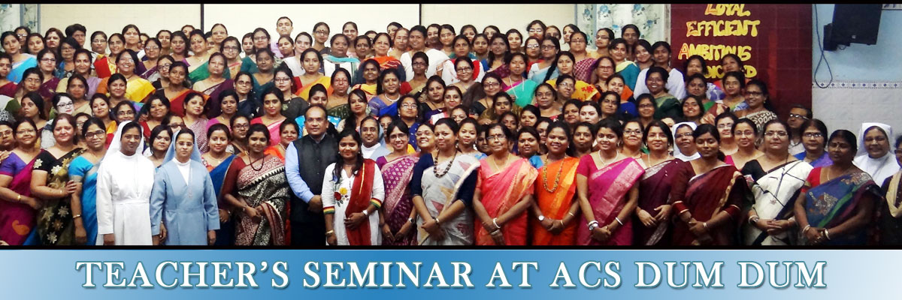

Auxilium Convent School is a private English-medium convent school located at Dum Dum, Kolkata, West Bengal, India. This school is affiliated to Council for the Indian School Certificate Examinations.[1] The school was established in 1960. This is a Catholic Educational Institution governed by the Salesian Sisters.[2][3] Auxilium Convent has schools all over India including Maharashtra and Goa. They were founded by Saint Maria Ṃazzarello in 1872 to work alongside Saint John Bosco in his teaching projects in Turin and continue to be a teaching order worldwide. The School admits all children irrespective of caste and creed.[4]
:)
this is one of the best school
my projects
